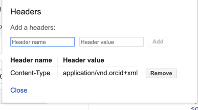

5. POST: an affiliation
Now that we've got an Access Token, we can use it like a password to take the API actions we requested permission for (in this case, to update activities). In this section, we'll add an education affiliation to our Sandbox record.
Add an education affiliation
Still have that Google OAuth Playground window open? If so, continue with step 1 below. If not, go back and repeat the Get an authorization code and Exchange authorization code for an access token steps from the previous section before moving on to the steps below.
- Beneath Step 3: Configure request to API, set HTTP Method to POST.

- Click Add headers, enter the values below, then click Add and Close
- Header name:
accept - Header value:
application/vnd.orcid+xml

- Header name:
- In the Request URI field enter:
https://api.sandbox.orcid.org/v2.0/[ORCID ID]/education
Replace [ORCID ID] with the iD for your Sandbox record, format XXXX-XXXX-XXXX-XXXX

- Click Content-type > Custom and enter
application/vnd.orcid+xml
 - Click Add, then click Close.
- Click Enter request body.
- Copy the education affiliation XML at the end of this section and paste it into the Request Body text box

- OPTIONAL: In the Request Body text box, edit the XML to reflect your institution.
For<disambiguated-organization-identifier>, use the Ringgold Identify database to find the Ringgold ID for your institution (you'll need to register a free Ringgold account in order to search the database). - Click Close.
- Click Send the request.
- The results will appear in the Request/Response section at right. Scroll to the bottom – if you see HTTP/1.1 201 Created, your education affiliation was successfully added!

- Visit the public view of your Sandbox record at
https://sandbox.orcid.org/[ORCID ID]to see your new education affiliation.

Notice that Source shows the name of the API client that added the affiliation - this is a key element that helps other systems consuming ORCID data determine whether this piece of information is authoritative.*
Education affiliation XML
<?xml version="1.0" encoding="UTF-8"?>
<education:education
xmlns:common="http://www.orcid.org/ns/common" xmlns:education="http://www.orcid.org/ns/education"
xmlns:xsi="http://www.w3.org/2001/XMLSchema-instance"
xsi:schemaLocation="http://www.orcid.org/ns/education ../education-2.0.xsd ">
<education:department-name>Department</education:department-name>
<education:role-title>Degree title</education:role-title>
<common:start-date>
<common:year>2012</common:year>
<common:month>01</common:month>
<common:day>01</common:day>
</common:start-date>
<education:organization>
<common:name>My University</common:name>
<common:address>
<common:city>Some City</common:city>
<common:region>Region</common:region>
<common:country>US</common:country>
</common:address>
<common:disambiguated-organization>
<common:disambiguated-organization-identifier>XXXXXX</common:disambiguated-organization-identifier>
<common:disambiguation-source>RINGGOLD</common:disambiguation-source>
</common:disambiguated-organization>
</education:organization>
</education:education>